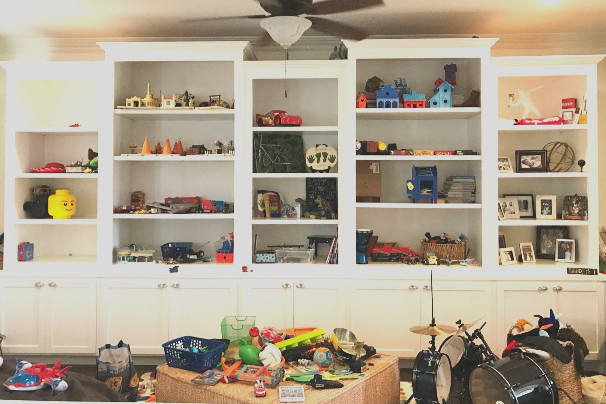
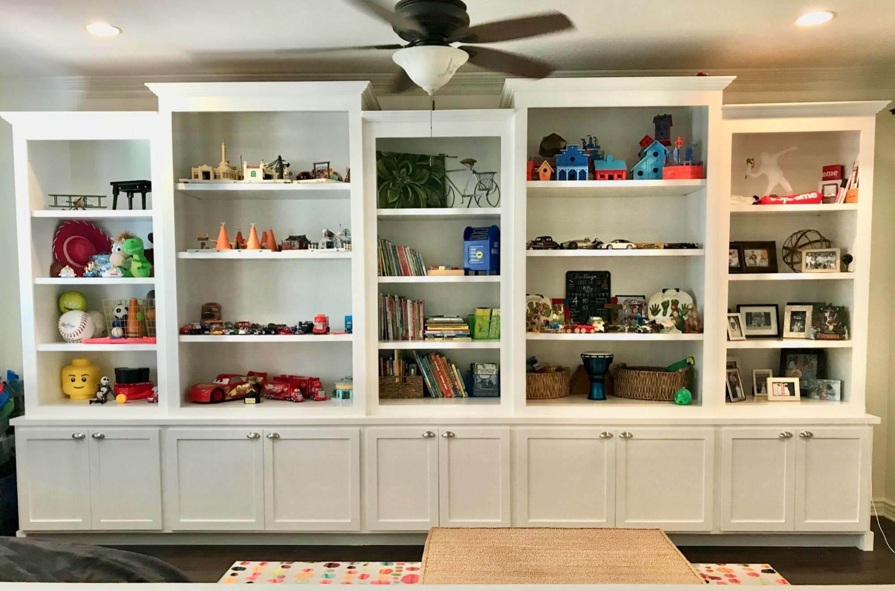

Unleashing Creativity and Order: A Guide to Organizing Your Playroom
A playroom is a magical space where children's imaginations run wild and creativity thrives. However, it can quickly turn into a chaotic mess if not organized properly. By implementing an effective organization system, you can create a playroom that encourages imaginative play, fosters learning, and brings a sense of order to the space. In this article, we will take you through a step-by-step process to organize your playroom, making it a haven of creativity and organization.
Step 1: Assess and Declutter: Before diving into the organization process, start by decluttering the playroom. Sort through toys, games, and other items, and separate them into three categories: keep, donate, and discard. Remove broken or unused toys and focus on keeping those that are age-appropriate, engaging, and in good condition.
Step 2: Categorize and Sort: Once you have decluttered, categorize the remaining items. Group similar toys together, such as building blocks, stuffed animals, art supplies, and board games. This step allows you to visualize the organization system and determine the storage solutions needed for each category.

Step 3: Create Storage Zones::
To maximize efficiency, create different storage zones within the playroom. Designate areas for specific activities or toy categories. For example, create a reading nook with a bookshelf and cozy seating, an arts and crafts station with supplies and a table, and a play area with open floor space for larger toys. This division helps children understand where to find and return toys, fostering independence and organization skills.
Step 4: Utilize Storage Solutions: Invest in storage solutions that are both functional and appealing to children. Use shelves, cubbies, and bins to keep toys organized and easily accessible. Clear containers or labeled bins help children identify where each toy belongs and encourage tidiness. Incorporate colorful baskets or bins to add a fun touch to the playroom while keeping small items organized.

Step 5: Display and Rotate Toys:
To avoid overwhelming your child and to keep their interest alive, rotate toys regularly. Display a portion of the toys while keeping the rest in storage. Every few weeks, swap out the displayed toys with those in storage. This technique keeps the playroom fresh, encourages exploration, and prevents clutter.
Step 6: Incorporate Labels and Visuals:
Labels and visuals can be a great tool for organizing a playroom. Use picture labels for younger children who cannot read yet, allowing them to identify where toys belong. Additionally, create a visual display to showcase their artwork, such as a gallery wall or a string with clothespins. This not only adds a personal touch but also encourages children to take ownership of their space.
Step 7: Consider Safety Measures: Ensure that your playroom is a safe environment for your child. Secure heavy furniture to the wall to prevent tipping accidents. Keep small parts or toys with choking hazards out of reach of younger children. Use outlet covers and corner protectors to childproof the space. Regularly check for any broken toys or sharp edges that need to be replaced or repaired.
Step 8: Foster a Cleanup Routine: Teaching your child the importance of cleaning up after playtime is essential for maintaining an organized playroom. Establish a cleanup routine and make it a fun activity. Set a timer, play upbeat music, or create a game out of tidying up. Encourage your child to take responsibility for their toys and make it a habit to return them to their designated spots.
Organizing a playroom is a labor of love that brings both order and creativity to your child's play space. By following the step-by-step process outlined in this article, you can create an organized and inviting environment that sparks imagination and fosters independence. Remember, a well-organized playroom allows children to explore, learn, and enjoy their playtime to the fullest. So, roll up your sleeves, involve your child in the process, and embark on the journey of creating an organized playroom that will delight both you and your little ones.
Playroom Organization